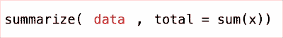

Data files and data frames

Last chapter we learned about vectors: sequences of numbers or strings. But if you ever worked with data, you know that data usually doesn’t get e-mailed to you as a vector, it comes as a table or spreadsheet. Tables are also the most common way to work with data in R, and in this chapter we’ll learn more about that.
The first thing we’ll learn is that, in R, tables are called data frames. There’s many ways to create data frames and one basic way is to stick some vectors in the data.frame() function. For example, data.frame(x, y, z) would create a data frame that included the data from vectors x, y, and z as columns.
Replace the
______ placeholder with a data frame with columns quarter, revenue, and expenses and assign it to the variable finances. Then, press ▶ Run Code.
But, let’s have a look, just to be sure!
(Remember that you can print out the contents of a variable by just writing its name.)
Take a look at the contents of
finances.
Compared to a spreadsheet, data frames are less flexible. They typically only have column names, no row names, and you certainly can’t color the cells. But the lack of flexibility also means that data frames are more predictable and easier to program with than spreadsheets.
One good way to think of data frames are as a collection of vectors, each vector being a column. You can “get out” or access the vectors in a data frame using the $ operator. For example, finances$quarter would be the vector c("Q1", "Q2", "Q3", "Q4").
The code below adds the column/vector
profit to finaces. Replace the ______ placeholder and use the sum() function to sum up the profit for all quarters.
But now we’re at a crossroad. R is an old programming language (most likely older than you!) and over the years people have come up with different ways to compute on and manipulate data in R. In this tutorial, we have to decide which way to go for. And I’ve already made up my mind here.
On account of it being intuitive, powerful, and popular, we’re going to use the tidyverse packages to work with data in R. A package is, well, a package of new functions and functionality, that can be added to R. The tidyverse is a collection of packages for data manipulation, visualization etc. that work well together.
To use a package you pull it out of your library of installed packages using the library() function
Start using the tidyverse by running library(tidyverse).
One of the many useful functions in the tidyverse is read_csv(). It can be used to read data frames from comma separated value (CSV) files, a simple text format for storing tabular data. Here’s the first four lines from the CSV file hyderabad-sales-2023-june.csv:
date,day_of_week,temp_max,sold_ice_creams,sold_coffee
2023-06-01,Thursday,38.9,13,17
2023-06-02,Friday,40.6,22,21
2023-06-03,Saturday,40.8,37,19The first row show the column headers, and each following row hold the comma separated values. To read in a comma separated file, say data.csv, give it as a string argument like this: read_csv("data.csv").
Take a look at
hyderabad-sales-2023-june.csv by reading it in with read_csv().
The printout above informs us that hyderabad-sales-2023-june.csv was read in as A tibble: 30 × 5. The 30 makes sense, there are 30 days in June, and there are 5 column in the data frame, but what’s a tibble? That’s just the tidyverses’s version of R’s regular data frames, but for the most part they can be used in the same way.
But we can’t use the data that we read in, at all! We read it in with read_csv, we got a printout, but, as we didn’t assign the it to a variable, we can do anything with it. Remember that you assign values to variable names using the arrow operator <-. For example, a_random_number <- runif(1) would put a random number between 0.0 and 1.0 “into” a_random_number.
Use
read_csv() to read in hyderabad-sales-2023-june.csv, but now, assign it to the variable sales.
Three of the most common things to do when analyzing data is to:
- Summarize the data. For example, to sum up a column.
- Filter the data. For example, we might only want to look at the rows stamped with “Saturday”.
- Group by some column (say the day of the week), and summarize each group.
The tidyverse have functions for all of these!
The function that helps you summarize is called 🥁🥁🥁 summarize! The first argument is the data frame to operate on, and every subsequent named argument defines a new summary. A bit abstract, maybe, but look at this:
summarize(sales, avg_sold_ice_creams = mean(sold_ice_creams))# A tibble: 1 × 1
avg_sold_ice_creams
<dbl>
1 17.8This takes the data frame sales and calculates the mean value of the column sold_ice_creams, and assigns it to a new column named avg_sold_ice_creams. The result is a new data frame with the summary (here just the single value).
Use
summarize() to calculate the total number of sold ice creams in sales.
Like many other tidyverse functions, summarize allows you to freely reference column names from the data frame. For example, if we just write:
sum(sold_ice_creams)Error: object 'sold_ice_creams' not foundThen R will complain, and rightfully so, as sold_ice_creams is not an existing variable name. But when we write:
summarize(sales, n_sold_ice_creams = sum(sold_ice_creams))# A tibble: 1 × 1
n_sold_ice_creams
<dbl>
1 534Then the summarize function knows to look among the columns in sales before complaining. Not all R functions are nice like this, but the tidyverse ones often are.
The tidyverse functions are also well suited to combine using the pipe operator |>, so called because it takes data on the left and “pipes it in” as the first argument in the function on the right. Instead of writing sum(1, 2, 3), one can go:
1 |> sum(2, 3)[1] 6Similarly, as summarize() takes the data frame as the first arguments, this is two ways of writing the same thing:

Rewrite the expression to use the pipe operator (
|>), but it should still do the same thing.
How do I type a | (horisontal bar)?
This can be a bit tricky, depending on your keyboard. If you can’t figure it out, try searching for something like:
How to type vertical bar on a French|Swedish|Italian Mac|Windows keyboard?
There’s actually not really any point using |> for simple statements, like the above, but it makes it much easier to compose complex data transformations. We’ll get to that soon!
For now, let’s learn how to filter out the rows we want using the 🥁🥁🥁 filter function, which takes a data frame as the first argument, and then one or more logical expressions, and return only those rows that matches all expressions. For example, days that were warmer than 40° C:
sales |> filter(temp_max > 40.0)# A tibble: 3 × 5
date day_of_week temp_max sold_ice_creams sold_coffee
<date> <chr> <dbl> <dbl> <dbl>
1 2023-06-02 Friday 40.6 22 21
2 2023-06-03 Saturday 40.8 37 19
3 2023-06-04 Sunday 42.4 35 13Or the data from the 1st of June, 2023:
sales |> filter(date == "2023-06-01")# A tibble: 1 × 5
date day_of_week temp_max sold_ice_creams sold_coffee
<date> <chr> <dbl> <dbl> <dbl>
1 2023-06-01 Thursday 38.9 13 17There are many operators and functions that can be used in a logical expression, here are the most common ones:
| Logical operator | |
|---|---|
== |
Equal to (yes, it’s == and not =) |
!= |
Not equal to |
> |
Greater than |
>= |
Greater than or equal to |
< |
Less than |
<= |
Less than or equal to |
Replace
______ with a filter() expression that keeps only the Saturday sales data.
Tip: When using == to compare strings, uppercase and lowercase letters are not equal. "O_O" == "O_o" is FALSE.
Now comes the point of the pipe operator |> ! Using it we can combine, or chain together, several statements. For example, if we wanted to read in a CSV file and calculate the median doughnuts sold on Mondays, we could squish it all into one single line:
ny_sales <- read_csv("new-york-sales-2025-april.csv")
summarize(filter(ny_sales, day_of_week == "Monday"), median_sold_doughnuts = median(sold_doughnuts))But that’s pretty unreadable! An alternative is to do one step at a time, assigning each intermediate result to a variable:
ny_sales <- read_csv("new-york-sales-2025-april.csv")
monday_sales <- filter(ny_sales, day_of_week == "Monday")
median_monday_sales <- summarize(
monday_sales, median_sold_doughnuts = median(sold_doughnuts)
)
median_monday_salesThat’s alright, I guess, but with the pipe operator |> we can simplify this even further!
ny_sales <- read_csv("new-york-sales-2025-april.csv")
ny_sales |>
filter(day_of_week == "Monday") |>
summarize(median_sold_doughnuts = median(sold_doughnuts))# A tibble: 1 × 1
median_sold_doughnuts
<dbl>
1 142.When using the |> it’s common to have one function per line, with a two-space indent on all but the first line.
Combine the two last exercises and write a statement using
|> that calculates the total number of ice creams we’ve sold on Saturday in the sales data.
…
…
Great work! Now go to the next chapter.